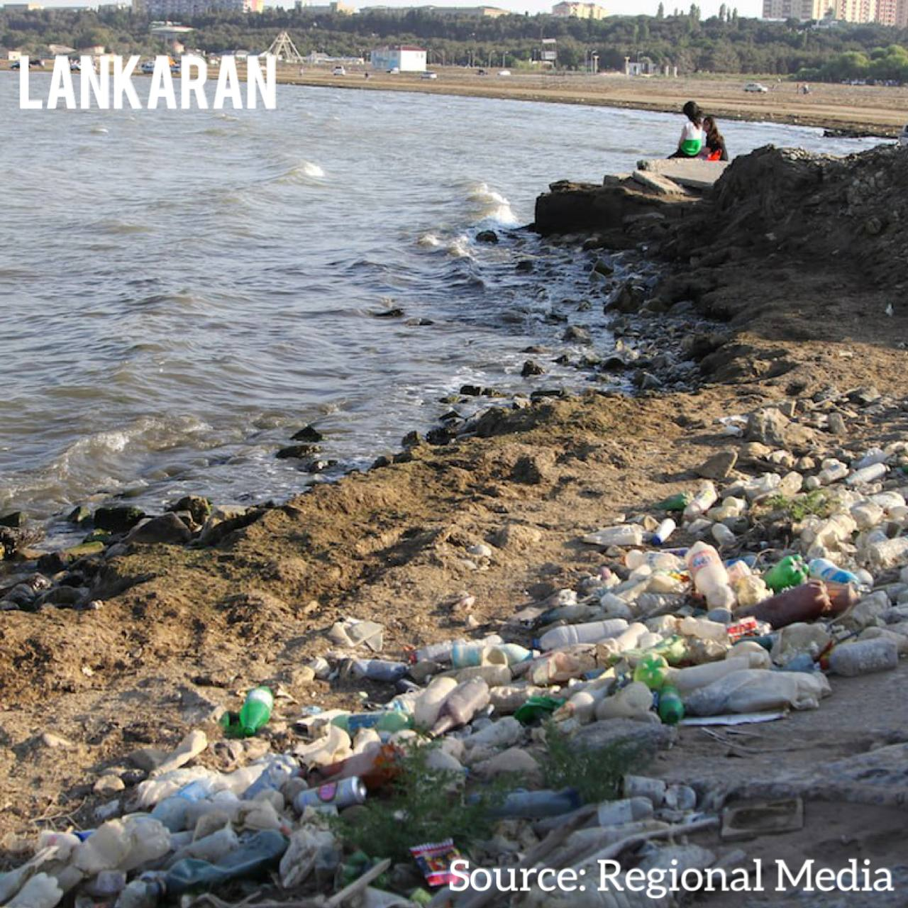
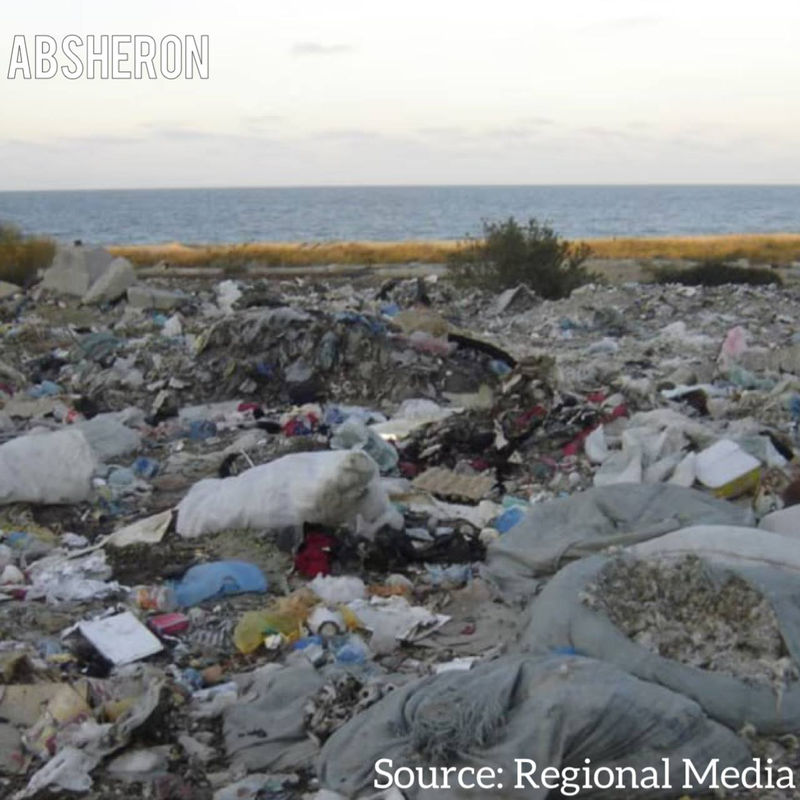
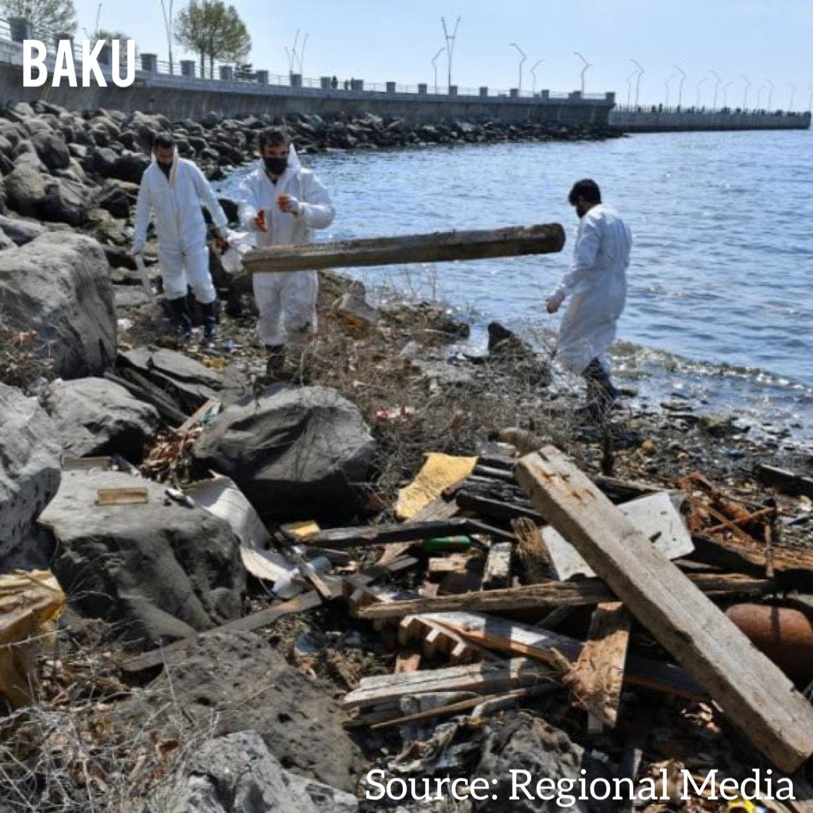

What do we want?
Our goal is to stop the Caspian from drying up. As citizens of Baku, we cannot stand by and watch the Caspian Sea slowly disappear. Now, we invite you to join our team. No matter where you are from, this crisis affects everyone — after all, it is the world’s largest lake.
Here you can learn more about Caspian Sea, and more about Caspian drie
ActivityHub
Our mission is to bring people together to help restore and protect the Caspian Sea. What is happening to it today is not just an environmental issue — it is a shared responsibility that affects all of us. The Caspian Sea is slowly drying, and with it исчезают ecosystems, wildlife, and the natural balance of an entire region. We cannot stand aside and watch this happen. We aim to build a community of people who care — people who are ready to take action, raise awareness, and contribute to real change. From organizing clean-up initiatives to spreading knowledge about the crisis, every small effort matters. By shining a light on the problem, we hope more people will understand its urgency, share it with others, and become part of the solution. Together, we can preserve the Caspian Sea for future generations — before it is too late.
Click to see what we can change today
DATA
xx-xx-xxxx
PLACE
xxxxxx
Caspian Sea Timeline
Explore how the Caspian Sea has changed over time and see how its visible area has gradually decreased. (Source NASA Worldview)
Caspian Sea Water Level
This chart shows how the Caspian Sea water level has changed over time. The line animates when the page loads, so visitors can immediately see the downward trend.
Long-term trend
Recent years
Caspian Sea Surface Temperature
The trash at the Caspian coast line
As residents of Azerbaijan, we are highly familiar with the issue of litter accumulating along our coastline of the Caspian Sea. To some, this waste may appear insignificant — merely plastic scattered along the shore, seemingly isolated and harmless. However, this perception is misleading. While much of the visible garbage is concentrated on Azerbaijan’s beaches, pollution of the Caspian Sea itself is driven largely by other sources. In particular, microplastics are carried into the sea by major rivers such as the Volga River, which brings vast amounts of contamination from upstream regions. At the same time, coastal waste does not remain static. Over time, it is gradually transported into the water. As plastic breaks down, it becomes less visible, fragmenting into microscopic particles that disperse throughout the marine environment. These microplastics are then ingested by aquatic organisms at all levels of the food chain, from plankton to fish. They can cause internal damage and introduce toxic substances into living organisms. Ultimately, this pollution comes back to humans. Through the consumption of fish, microplastics enter our bodies, where they may contribute to immune system disruption, cellular damage, and inflammation. Given that fishing remains a vital component of both the economy and daily life in countries surrounding the Caspian Sea, this is not only an environmental concern but also a serious socio-economic issue.


